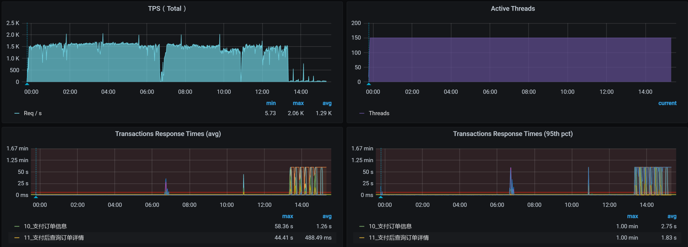
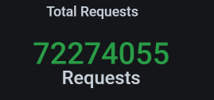
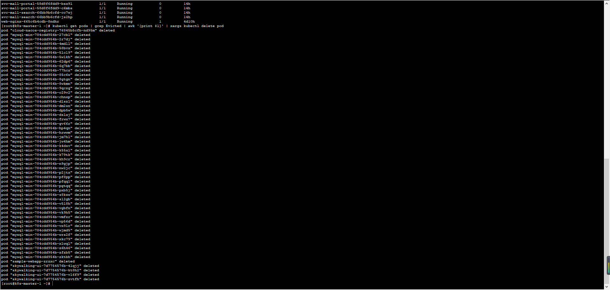
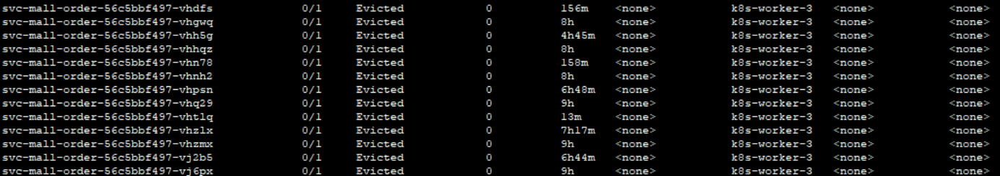
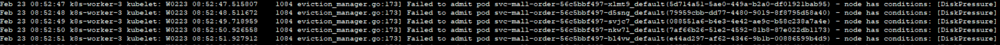
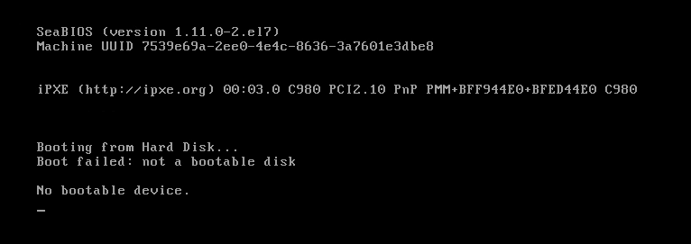
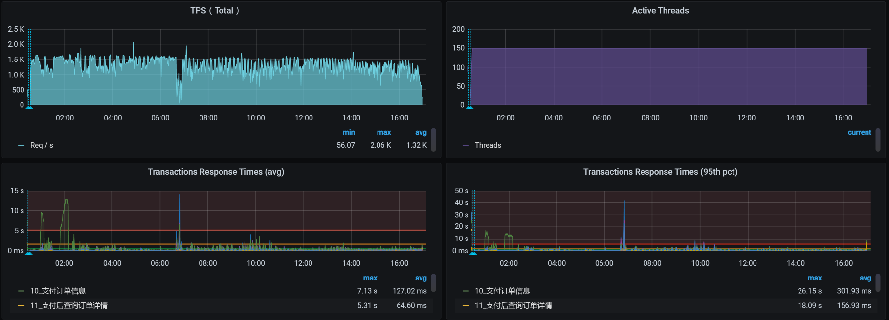
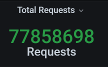
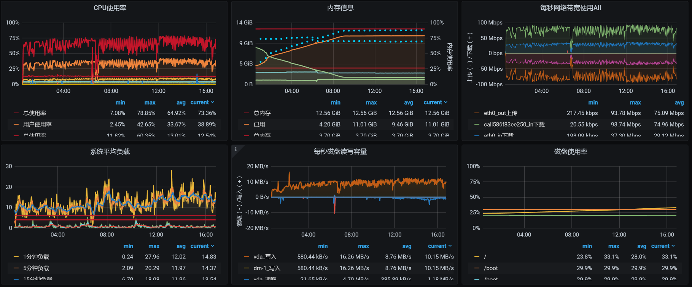
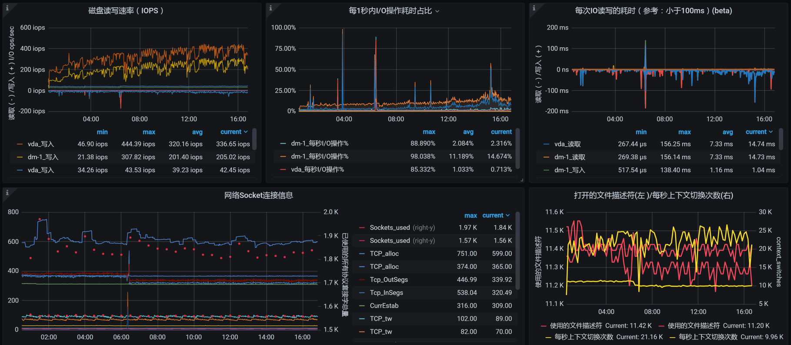

- 00 开篇词 打破四大认知局限，进阶高级性能工程师.md.html
- 01 性能工程：为什么很多性能测试人员无法对性能结果负责？.md.html
- 02 关键概念：性能指标和场景的确定.md.html
- 03 核心分析逻辑：所有的性能分析，靠这七步都能搞定.md.html
- 04 如何构建性能分析决策树和查找瓶颈证据链？.md.html
- 05 性能方案：你的方案是否还停留在形式上？.md.html
- 06 如何抽取出符合真实业务场景的业务模型？.md.html
- 07 性能场景的数据到底应该做成什么样子？.md.html
- 08 并发、在线和TPS到底是什么关系？.md.html
- 09 如何设计全局和定向监控策略？.md.html
- 10 设计基准场景需要注意哪些关键点？.md.html
- 11 打开首页之一：一个案例，带你搞懂基础硬件设施的性能问题.md.html
- 12 打开首页之二：如何平衡利用硬件资源？.md.html
- 13 用户登录：怎么判断线程中的Block原因？.md.html
- 14 用户信息查询：如何解决网络软中断瓶颈问题？.md.html
- 15 查询商品：资源不足有哪些性能表现？.md.html
- 16 商品加入购物车：SQL优化和压力工具中的参数分析.md.html
- 17 查询购物车：为什么铺底参数一定要符合真实业务特性？.md.html
- 18 购物车信息确定订单：为什么动态参数化逻辑非常重要？.md.html
- 19 生成订单信息之一：应用JDBC池优化和内存溢出分析.md.html
- 20 生成订单信息之二：业务逻辑复杂，怎么做性能优化？.md.html
- 21 支付前查询订单列表：如何分析优化一个固定的技术组件？.md.html
- 22 支付订单信息：如何高效解决for循环产生的内存溢出？.md.html
- 23 决定容量场景成败的关键因素有哪些？.md.html
- 24 容量场景之一：索引优化和Kubernetes资源分配不均衡怎么办？.md.html
- 25 容量场景之二：缓存对性能会有什么样的影响？.md.html
- 26 稳定性场景之一：怎样搞定业务积累量产生的瓶颈问题？.md.html
- 27 稳定性场景之二：怎样搞定磁盘不足产生的瓶颈问题？.md.html
- 28 如何确定异常场景的范围和设计逻辑？.md.html
- 29 异常场景：如何模拟不同组件层级的异常？.md.html
- 30 如何确定生产系统配置？.md.html
- 31 怎么写出有价值的性能报告？.md.html
- 我们这个课程的系统是怎么搭建起来的？.md.html
- 结束语 做真正的性能项目.md.html
- 捐赠
27 稳定性场景之二：怎样搞定磁盘不足产生的瓶颈问题？
你好，我是高楼。
上节课，我们讲解了稳定性场景的两个要点：运行时长和压力量级，并通过课程的示例系统，带你具体操作了稳定性场景。
在定向分析的第一个阶段中，我们分析了虚拟机内存超分导致的操作系统OOM的问题，发现是配置的超分过大导致的。在我们降低了虚拟机的内存之后，稳定性场景的运行时间超过了12个小时，累积业务量达到7200多万，这样的结果已经达到了我们的目标。
可是，由于贪心，我并没有停止场景，就在它继续运行的时候，又出现了新问题……因此，我们今天就进入到定向分析的第二阶段，看看还有什么问题在等着我们。
定向监控分析
定向分析第二阶段
当场景继续运行的时候，我看到了这样的数据：

从图中我们可以很明显地看到，在场景持续运行的过程中，TPS掉下来了，响应时间则是蹭蹭往上涨。
我们看一下这时候的总业务累积量：

也就是说，多了20多万的业务累积量。
见到问题，不分析总是觉得不那么舒服，那我们就来分析一下。
还是按照性能分析决策树，我们把计数器一个一个查过去。在我查看MySQL的Pod日志时，发现它一直在被删掉重建：

请注意，我们这是一个示例系统，为了方便重建，我把MySQL放到Pod中了。如果是在真实的环境中，我建议你最好根据生产的实际配置来做数据库的配置。
讲到这里，我稍微回应一下行业里的一种声音：数据库不应该放到Kubernetes的Pod中去。我不清楚持这样观点的人，只是在感觉上认为不安全，还是真正遇到了问题。在我的经验中，很多系统对数据库的性能要求其实并不高，业务量也不大。而用容器来管理便于迁移和重建，并且性能上也完全跟得上。所以，在这种场景下用Pod也没有关系。
当然，也有一些系统用数据库比较狠，为了保障更高的性能，会在物理机上直接部署。如果你面对的系统，确实需要用到物理机来创建数据库，那就选择物理机。如果Pod可以满足需求，我觉得不用纠结，直接用Pod就可以了。
因为MySQL的Pod被删掉重建，而MySQL又位于worker-1中，那我们就来看一下worker-1的操作系统日志：
Feb 22 00:43:16 k8s-worker-1 kubelet: I0222 00:43:16.085214 1082 image_gc_manager.go:304] [imageGCManager]: Disk usage on image filesystem is at 95% which is over the high threshold (85%). Trying to free 7213867827 bytes down to the low threshold (80%).
原来是分配给worker-1的磁盘被用光了，难怪MySQL的Pod一直在被删掉重建。
我们检查一下磁盘的配额：
[root@k8s-worker-1 ~]# df -h
文件系统 容量 已用 可用 已用% 挂载点
devtmpfs 6.3G 0 6.3G 0% /dev
tmpfs 6.3G 24M 6.3G 1% /dev/shm
tmpfs 6.3G 67M 6.3G 2% /run
tmpfs 6.3G 0 6.3G 0% /sys/fs/cgroup
/dev/mapper/centos-root 47G 45G 2.7G 95% /
/dev/vda1 1014M 304M 711M 30% /boot
tmpfs 1.3G 4.0K 1.3G 1% /run/user/42
tmpfs 6.3G 12K 6.3G 1% /var/lib/kubelet/pods/9962f8d2-f6bb-4981-a073-dd16bfa9a171/volumes/kubernetes.io~secret/kube-proxy-token-vnxh9
tmpfs 6.3G 12K 6.3G 1% /var/lib/kubelet/pods/f5872331-14b1-402b-99e0-063834d834fa/volumes/kubernetes.io~secret/calico-node-token-hvs7q
overlay 47G 45G 2.7G 95% /var/lib/docker/overlay2/e61e5b2232592ef9883861d8536f37153617d46735026b49b285c016a47179cf/merged
overlay 47G 45G 2.7G 95% /var/lib/docker/overlay2/4c057d86c1eabb84eddda86f991ca3852042da0647fd5b8c349568e2a0565591/merged
shm 64M 0 64M 0% /var/lib/docker/containers/f1e8c983be46895acc576c1d51b631bd2767aabe908035cff229af0cd6c47ffb/mounts/shm
shm 64M 0 64M 0% /var/lib/docker/containers/c7e44cdfc5faa7f8ad9a08f8b8ce44928a5116ccf912fbc2d8d8871ab00648a5/mounts/shm
overlay 47G 45G 2.7G 95% /var/lib/docker/overlay2/a685a1652586aca165f7f159347bf466dd63f497766762d8738b511c7eca1df3/merged
overlay 47G 45G 2.7G 95% /var/lib/docker/overlay2/b7da3fde04f716a7385c47fe558416b35e471797a97b28dddd79f500c62542f2/merged
tmpfs 1.3G 36K 1.3G 1% /run/user/0
tmpfs 6.3G 12K 6.3G 1% /var/lib/kubelet/pods/d01f8686-e066-4ebf-951e-e5fe9d39067d/volumes/kubernetes.io~secret/node-exporter-token-wnzc6
overlay 47G 45G 2.7G 95% /var/lib/docker/overlay2/5215bd987a62316b3ebb7d6b103e991f26fffea4fe3c05aac51feeb44ab099ab/merged
shm 64M 0 64M 0% /var/lib/docker/containers/d0cf9df15ac269475bb9f2aec20c048c8a61b98a993c16f5d6ef4aba2027326a/mounts/shm
overlay 47G 45G 2.7G 95% /var/lib/docker/overlay2/aa5125b01d60b19c75f3f5d018f7bb51e902264580a7f4033e5d2abaaf7cc3f6/merged
overlay 47G 45G 2.7G 95% /var/lib/docker/overlay2/3a7d3d4cddc51410103731e7e8f3fbcddae4d74a116c88582557a79252124c5d/merged
tmpfs 6.3G 12K 6.3G 1% /var/lib/kubelet/pods/34f60184-07e5-40da-b2cb-c0295d560d54/volumes/kubernetes.io~secret/default-token-7s6hb
overlay 47G 45G 2.7G 95% /var/lib/docker/overlay2/940009fca9f57e4b6f6d38bab584d69a2f3ff84153e3f0dfd3c9b9db91fa2b30/merged
shm 64M 0 64M 0% /var/lib/docker/containers/12c6a27bb53a4b0de5556a960d7c394272d11ceb46ac8172bd91f58f762cde14/mounts/shm
overlay 47G 45G 2.7G 95% /var/lib/docker/overlay2/366007a9f82dfb9bd5de4e4cadf184cba122ef2070c096f393b7b9e24ae06a98/merged
tmpfs 6.3G 12K 6.3G 1% /var/lib/kubelet/pods/251e9c86-4f25-42bd-82a0-282d057fe238/volumes/kubernetes.io~secret/nginx-ingress-token-cbpz9
overlay 47G 45G 2.7G 95% /var/lib/docker/overlay2/1defd5a0004201a0f116f48dd2a21cba16647a3c8fdfde802fb5ea1d3e5591ff/merged
shm 64M 0 64M 0% /var/lib/docker/containers/459bf58b1cafcc9ab673d30b92ae815a093e85593ab01921b9ba6e677e36fe45/mounts/shm
overlay 47G 45G 2.7G 95% /var/lib/docker/overlay2/49197bcd5b63e30abc94315b0083761a4fd25ebf4341d2574697b84e49350d53/merged
[root@k8s-worker-1 ~]#
可以看到，磁盘的配置是使用到95%就会驱逐Pod，而现在的磁盘使用量已经到了配置的限额。
既然如此，那我们的解决方案也就非常明确了，就是把磁盘再加大一些，我们再扩大100G：
[root@k8s-worker-1 ~]# df -h
文件系统 容量 已用 可用 已用% 挂载点
devtmpfs 6.3G 0 6.3G 0% /dev
tmpfs 6.3G 0 6.3G 0% /dev/shm
tmpfs 6.3G 19M 6.3G 1% /run
tmpfs 6.3G 0 6.3G 0% /sys/fs/cgroup
/dev/mapper/centos-root 147G 43G 105G 30% /
/dev/vda1 1014M 304M 711M 30% /boot
tmpfs 1.3G 4.0K 1.3G 1% /run/user/42
tmpfs 6.3G 12K 6.3G 1% /var/lib/kubelet/pods/d01f8686-e066-4ebf-951e-e5fe9d39067d/volumes/kubernetes.io~secret/node-exporter-token-wnzc6
tmpfs 6.3G 12K 6.3G 1% /var/lib/kubelet/pods/9962f8d2-f6bb-4981-a073-dd16bfa9a171/volumes/kubernetes.io~secret/kube-proxy-token-vnxh9
tmpfs 6.3G 12K 6.3G 1% /var/lib/kubelet/pods/251e9c86-4f25-42bd-82a0-282d057fe238/volumes/kubernetes.io~secret/nginx-ingress-token-cbpz9
tmpfs 6.3G 12K 6.3G 1% /var/lib/kubelet/pods/f5872331-14b1-402b-99e0-063834d834fa/volumes/kubernetes.io~secret/calico-node-token-hvs7q
overlay 147G 43G 105G 30% /var/lib/docker/overlay2/7380ac7d8f83ba37ddae785e5b4cd65ef7f9aa138bfb04f86e3c7f186f54211a/merged
shm 64M 0 64M 0% /var/lib/docker/containers/3c90444a51820f83954c4f32a5bc2d1630762cdf6d3be2c2f897a3f26ee54760/mounts/shm
overlay 147G 43G 105G 30% /var/lib/docker/overlay2/c841e85e88fdcfe9852dcde33849b3e9c5a229e63ee5daea374ddbc572432235/merged
overlay 147G 43G 105G 30% /var/lib/docker/overlay2/147a81e8a50401ec90d55d3d4df3607eb5409ffe10e2c4c876c826aa5d47caf0/merged
shm 64M 0 64M 0% /var/lib/docker/containers/9e2c04b858025523e7b586fe679a429ac49df3711881261cda40b158ad05aebf/mounts/shm
overlay 147G 43G 105G 30% /var/lib/docker/overlay2/83e01c8cda50233088dc70395a14c861ac09ce5e36621f1d8fdd8d3d3e0a7271/merged
shm 64M 0 64M 0% /var/lib/docker/containers/f23362117532f08ff89f937369c3e4d2039d55a9ba51f61e41e62d725b24e3a1/mounts/shm
overlay 147G 43G 105G 30% /var/lib/docker/overlay2/0cfe0dbd0c633e13a42bd3d69bd09ea51ab4354d77a0e6dcf93cabf4c76c3942/merged
overlay 147G 43G 105G 30% /var/lib/docker/overlay2/7b83010457d86cecf3c80ebc34d9db5d26400c624cba33a23f0e9983f7791aef/merged
overlay 147G 43G 105G 30% /var/lib/docker/overlay2/0f31c96b1961d5df194a3710fdc896063a864f4282d7a287b41da27e4d58a456/merged
overlay 147G 43G 105G 30% /var/lib/docker/overlay2/f67a6de6a1b18d4748581230ed7c34c8f16d8f0dd877a168eb12eacf6bf42f05/merged
shm 64M 0 64M 0% /var/lib/docker/containers/e3eb1ea1785e35045213518dd6814edcd361b501748b8e6bdede20c8961062d2/mounts/shm
overlay 147G 43G 105G 30% /var/lib/docker/overlay2/5cec0d1a7723dfcb0e5eaf139f4965a220575557795ad2959ce100aa888dc12b/merged
tmpfs 1.3G 32K 1.3G 1% /run/user/0
tmpfs 6.3G 12K 6.3G 1% /var/lib/kubelet/pods/704657eb-ea28-4fb0-8aee-c49870e692d3/volumes/kubernetes.io~secret/default-token-7s6hb
overlay 147G 43G 105G 30% /var/lib/docker/overlay2/da4073b560a2ce031fa234624c09757b65eb7b6cfc895186dbf8731e2d279fee/merged
shm 64M 0 64M 0% /var/lib/docker/containers/76a6814a838778049495e9f8b2b93e131d041c8f90e8dea867d3c99fa6ca918b/mounts/shm
tmpfs 6.3G 12K 6.3G 1% /var/lib/kubelet/pods/a73b0bc6-76fc-4e2a-9202-380397399b76/volumes/kubernetes.io~secret/default-token-7s6hb
overlay 147G 43G 105G 30% /var/lib/docker/overlay2/cea9c51e718964cc46824ba51ff631a898402318c19e9603c6d364ac3bed8a27/merged
shm 64M 0 64M 0% /var/lib/docker/containers/d936e646d12f7b8381a36e8a11094d76a0a72d95f84edf3f30c7e8b3981264e0/mounts/shm
overlay 147G 43G 105G 30% /var/lib/docker/overlay2/4c210c659428999d000676fde7f1c952f1f43d68b63b308fa766b0ce41568f06/merged
[root@k8s-worker-1 ~]#
这样就完美地解决了MySQL中的Pod一直在被删掉重建的问题，对吧！
不过，我们高兴得有些早了，正当我把这次的稳定性场景接着跑起来的时候，结果还没出来，又出现了新问题！于是，我们只得来到定向分析的第三阶段。
定向分析第三阶段
在上一阶段中，我们发现了MySQL的Pod被删掉重建。于是，当场景再次运行起来时，我就直接查看了所有namespace中的Pod状态，结果看到了下面的信息：

不知道什么原因，Order容器一直在被驱逐。
通过查看日志，我发现了这样的信息：

DiskPressure！这就是说Order服务所在的worker上的存储被用完了呗。在Order应用的虚拟机中，我通过查看Kubernetes日志，发现了这样的错误信息：
kubelet: W0222 14:31:35.507991 1084 eviction_manager.go:344] eviction manager: attempting to reclaim ephemeral-storage
这是Order应用的存储已经用完了，并且尝试扩展存储。我们接着查Kubernetes日志，看到了“The node was low on resource: ephemeral-storage”的提示。
对Order服务来说，不就是写个日志吗？其他的应用方法都是在用CPU，到底什么Order服务会用这么多的磁盘呢？我们查一下日志，结果看到了这样的错误信息：
[2021-02-25 20:48:22.022] [org.apache.juli.logging.DirectJDKLog] [http-nio-8086-exec-349] [175] [ERROR] Servlet.service() for servlet [dispatcherServlet] in context with path [] threw exception [Request processing failed; nested exception is org.springframework.jdbc.UncategorizedSQLException:
### Error querying database. Cause: java.sql.SQLException: Index oms_order is corrupted
### The error may exist in URL [jar:file:/app.jar!/BOOT-INF/lib/mall-mbg-1.0-SNAPSHOT.jar!/com/dunshan/mall/mapper/OmsOrderMapper.xml]
### The error may involve com.dunshan.mall.mapper.OmsOrderMapper.selectByExample-Inline
### The error occurred while setting parameters
### SQL: SELECT count(0) FROM oms_order WHERE (delete_status = ? AND member_id = ?)
### Cause: java.sql.SQLException: Index oms_order is corrupted
; uncategorized SQLException; SQL state [HY000]; error code [1712]; Index oms_order is corrupted; nested exception is java.sql.SQLException: Index oms_order is corrupted] with root cause
java.sql.SQLException: Index oms_order is corrupted
这样的错误有很多，并且还增加得非常快。难道是Order表坏了？
在Order服务的日志中，我们可以看到明显是SQL执行报错了，但是我们在上面已经增加了MySQL机器的硬盘，按理说不应该是MySQL的磁盘不够导致的这类报错。所以，我们再来看看MySQL错误日志：
156 2021-02-25T11:26:35.520327Z 0 [Note] InnoDB: Uncompressed page, stored checksum in field1 2147483648, calculated checksums for field1: crc32 1193184986/3495072576, innodb 846701958, none 3735928559, stored checksum in field2 2147483659, calculated checksums for field2: crc32 1193184986/3495072576, innodb 810726412, none 3735928559, page LSN 0 0, low 4 bytes of LSN at page end 3836608512, page number (if stored to page already) 327680, space id (if created with >= MySQL-4.1.1 and stored already) 0
157 InnoDB: Page may be a freshly allocated page
158 2021-02-25T11:26:35.520373Z 0 [Note] InnoDB: It is also possible that your operating system has corrupted its own file cache and rebooting your computer removes the error. If the cor rupt page is an index page. You can also try to fix the corruption by dumping, dropping, and reimporting the corrupt table. You can use CHECK TABLE to scan your table for corruption. Please refer to http://dev.mysql.com/doc/refman/5.7/en/forcing-innodb-recovery.html for information about forcing recovery.
159 2021-02-25T11:26:35.520408Z 0 [ERROR] InnoDB: Space id and page no stored in the page, read in are [page id: space=779484, page number=3836674048], should be [page id: space=111, pag e number=150922]
160 2021-02-25T11:26:35.520415Z 0 [ERROR] InnoDB: Database page corruption on disk or a failed file read of page [page id: space=111, page number=150922]. You may have to recover from a backup.
161 2021-02-25T11:26:35.520420Z 0 [Note] InnoDB: Page dump in ascii and hex (16384 bytes):
.............
从上面的信息来看，应该是数据库的文件损坏了，从而导致了报错。
那我们就尝试一下直接在MySQL中对这个表进行操作，会不会报错。结果得到如下信息：
[Err] 1877 - Operation cannot be performed. The table 'mall.oms_order' is missing, corrupt or contains bad data.
这个错误日志提示说，操作系统的文件有可能出现了问题，建议重启操作系统。既然系统有建议，那咱就重启一下吧。
然而，世事无常，处处是坑，我们在重启操作系统时看到了这个界面：

想哭对吧？现在居然连磁盘都找不着了……
回想刚才对磁盘的操作，我们在增加磁盘空间时，直接用的是这个命令：
qumu-img resize imagename +100G
我在查看了官方资料之后发现，这个命令虽然能扩容，但是要先关闭虚拟机，不然磁盘会出问题。而我们当时并没有关虚拟机。没办法，我们只有把虚拟机重建一下了。
经过一翻折腾，我们再次把数据库启动，等应用都正常连上之后，再次把稳定性场景运行起来，看到了这样的结果：

此时的业务累积量为：

从场景数据来看，TPS有所下降，这是因为我们在压力过程中，所有的数据一直都是累加的。累加得越多，数据库中的操作就会越慢，我们看一下worker-1中，数据库的资源使用量就可以知道：


你看，这里面的系统负载和IO吞吐，都因稳定性运行时间越来越长、数据量越来越多受到了影响。我们后续的优化思路也就非常明确了，那就是保证当前表的数据量级，像分库分表、定期归档这样的手段就可以上了，这些操作都是常规操作。
在我们当前这个场景中，由于稳定性目标已经达到，就不再接着往下整了。毕竟，性能优化是没有止境的。
总结
正如我们前面所说，在稳定性场景中，我们要关注的就是“运行时长”和“业务累积量”这两个指标。只要达到了这两个指标，稳定性场景即可结束。
在这节课中，我们分析了长时间运行导致的两个问题：
- 磁盘不足的问题
这样的问题在稳定性中也是经常出现的。因此，我们在稳定性场景运行之前，最好预估一下会用到多少磁盘。像日志之类的增长速度，一定要做好循环日志，不要保留太长时间。如果你想保留，那就移到其他地方去。
- 数据库文件损坏的问题
这是扩展磁盘空间导致的问题。虽然在操作的过程中，磁盘看似成功扩展了，但由于操作的不当导致了数据库文件损坏。这类问题虽然是操作上的问题，但在操作的过程中我们却没有看到任何的错误信息和提醒。
另外，我们还需要充分考虑数据库的累积量。我建议你先通过计算来判断，当数据库的数据量增加后，会对应用产生什么样的影响。磁盘要能保证数据库当前表的数据量，以及数据增长过程中的查询性能。
在这里，我无法穷举出稳定性中的所有问题，只有通过实际案例给你一个分析的思路，供你借鉴。在你的应用场景中，你可以根据RESAR性能工程理论分析具体的问题。
总之，在性能工程中，稳定性场景对系统来说是一个严峻的考验。“合情合理地设计稳定性场景，并且做到符合生产业务场景”是我们必须要达到的目标。
课后作业
这就是今天的全部内容，最后给你留两个思考题吧：
- 你在稳定性场景中遇到过什么由于业务不断累积导致的问题？
- 在稳定性场景中，如何保证磁盘使用量不会随场景持续增加，而是保持在一个使用量级？
记得在留言区和我讨论、交流你的想法，每一次思考都会让你更进一步。
如果这节课让你有所收获，也欢迎你分享给你的朋友，共同学习进步。我们下一讲再见！
© 2019 - 2023 Liangliang Lee. Powered by gin and hexo-theme-book.